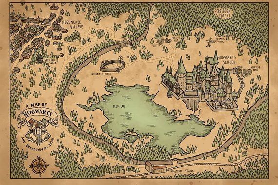
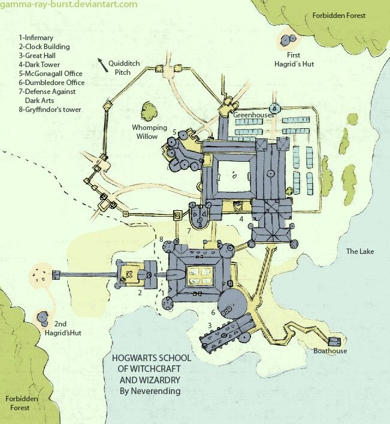

El Colegio Hogwarts de Magia y Hechicería es un internado mágico ubicado en Escocia. El castillo se ubica en unas montañas cercanas a un lago. La localización exacta no ha sido descubierta ya que está escondida por los más poderosos encantamientos posibles.
Hogwarts se encuentra en una apartada región montañosa en Escocia, cerca de una aldea mágica llamada Hogsmeade. El castillo tiene terrenos extensos con céspedes inclinados, camas de flores y zonas vegetales, un lago, un largo y denso bosque (llamado el Bosque Prohibido), un sin número de invernaderos, entre otros edificios, y un gran campo de quidditch. Existe también una lechucería, que hospeda a todas las lechuzas del colegio como a las de los estudiantes de primer año. Después que los estudiantes hayan pasado a los terrenos, las puertas son cerradas y estrictas medidas de seguridad son instaladas.
La escuela está encantada para repeler a los muggles (gente no-mágica) a los que Hogwarts les parece como un edificio en ruinas con un letrero en la entrada que dice "Peligro, prohibido el paso". Los aparatos electrónicos no funcionan alrededor de Hogwarts porque hay mucha magia en el aire, aun así, aparatos como radios o cámaras fotográficas pueden funcionar sin electricidad gracias a la magia en el ambiente.
No existen planos reales del gran complejo, ya que es una estructura ficticia, pero a través de las películas, los últimos videos juegos, y maquetas profesionales, se podría acercar el diseño del castillo definitivo, aunque varia respécto a la imaginación de cada lector de la novela. Se aprecian cambios en el castillo tanto dentro como fuera del mismo en las distintas películas.

[1] Mapa del Colegio Hogwarts de Magia y Hechicería

[2] Planos del Colegio Hogwarts de Magia y Hechicería